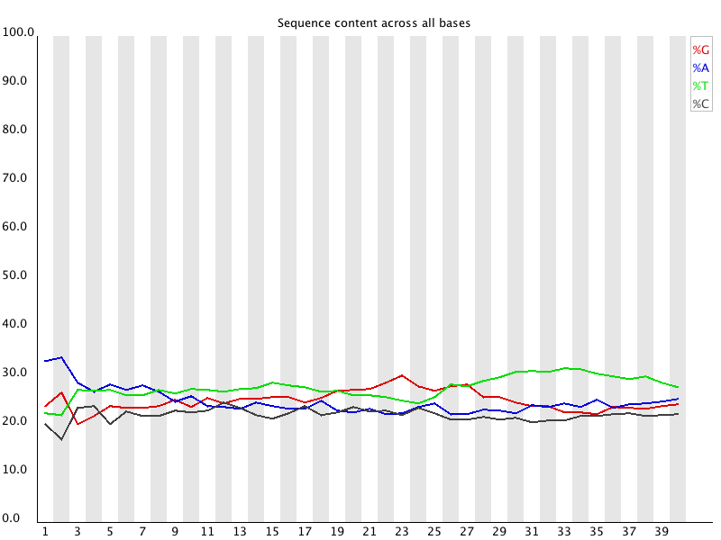
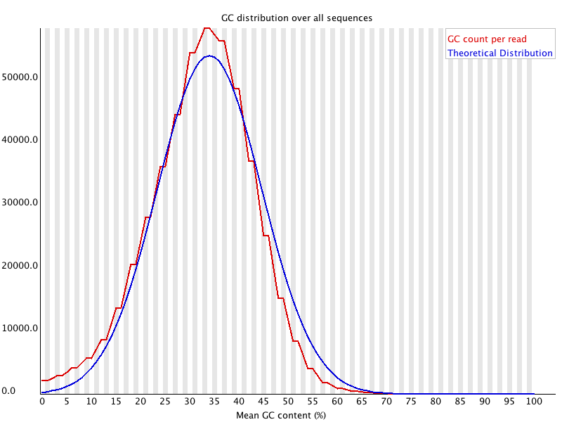
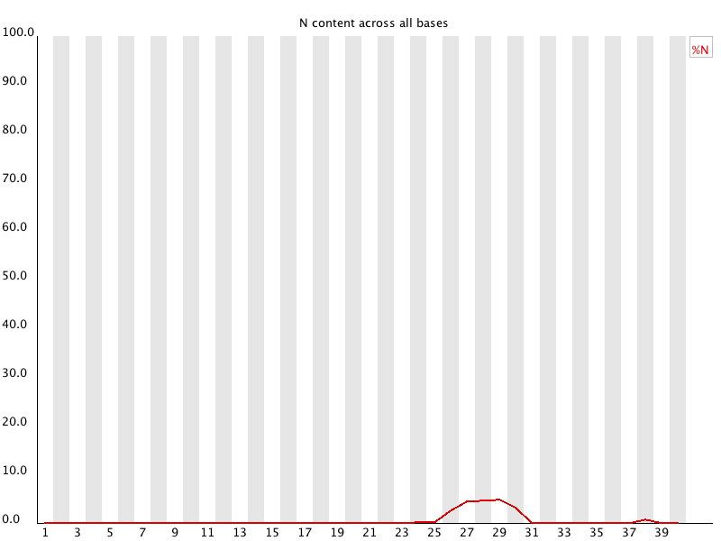
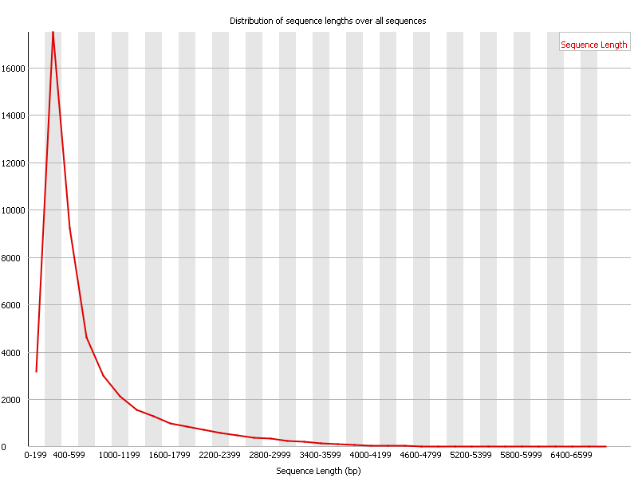

Apéndice A — FastQC help
Esta es una copia de la ayuda de FastQC (en inglés) disponible en https://www.bioinformatics.babraham.ac.uk/projects/fastqc/Help/
A.1 Introduction
A.1.1 What is FastQC
Modern high throughput sequencers can generate hundreds of millions of sequences in a single run. Before analysing this sequence to draw biological conclusions you should always perform some simple quality control checks to ensure that the raw data looks good and there are no problems or biases in your data which may affect how you can usefully use it.
Most sequencers will generate a QC report as part of their analysis pipeline, but this is usually only focused on identifying problems which were generated by the sequencer itself. FastQC aims to provide a QC report which can spot problems which originate either in the sequencer or in the starting library material.
FastQC can be run in one of two modes. It can either run as a stand alone interactive application for the immediate analysis of small numbers of FastQ files, or it can be run in a non-interactive mode where it would be suitable for integrating into a larger analysis pipeline for the systematic processing of large numbers of files.
A.2 Basic Operations
A.2.1 Opening a Sequence file
To open one or more Sequence files interactively simply run the program and select File > Open. You can then select the files you want to analyse.
Newly opened files will immediately appear in the set of tabs at the top of the screen. Because of the size of these files it can take a couple of minutes to open them. FastQC operates a queueing system where only one file is opened at a time, and new files will wait until existing files have been processed.
FastQC supports files in the following formats
- FastQ (all quality encoding variants)
- Casava FastQ files1
- Colorspace FastQ
- GZip compressed FastQ
- SAM
- BAM
- SAM/BAM Mapped only (normally used for colorspace data)
By default FastQC will try to guess the file format from the name of the input file. Anything ending in .sam or .bam will be opened as a SAM/BAM file (using all sequences, mapped and unmapped) , and everything else will be treated as FastQ format. If you want to override this detection and specify the file format manually then you can use the drop down file filter in the file chooser to select the type of file you’re going to load. You need to use the drop down selector to make the program use the Mapped BAM or Casava file modes as these won’t be selected automatically.
A.2.2 Evaluating Results
The analysis in FastQC is performed by a series of analysis modules. The left hand side of the main interactive display or the top of the HTML report show a summary of the modules which were run, and a quick evaluation of whether the results of the module seem entirely normal (green tick), slightly abnormal (orange triangle) or very unusual (red cross).
It is important to stress that although the analysis results appear to give a pass/fail result, these evaluations must be taken in the context of what you expect from your library. A ‘normal’ sample as far as FastQC is concerned is random and diverse. Some experiments may be expected to produce libraries which are biased in particular ways. You should treat the summary evaluations therefore as pointers to where you should concentrate your attention and understand why your library may not look random and diverse.
Specific guidance on how to interpret the output of each module can be found in the modules section of the help.
A.2.3 Saving a Report
In addition to providing an interactive report FastQC also has the option to create an HTML version of this report for a more permanent record. This HTML report can also be generated directly by running FastQC in non-interactive mode.
To create a report simply select File > Save Report from the main menu. By default a report will be created using the name of the fastq file with _fastqc.html appended to the end. The report will be created for whichever file tab was active when the menu option was selected.
The HTML file which is saved is a self-contained document with all of the graphs embedded into it, so you can distribute this single file. Alongside the HTML file is a zip file (with the same name as the HTML file, but with .zip added to the end). This file contains the graphs from the report as separate files but also contains data files which are designed to be easily parsed to allow for a more detailed and automated evauation of the raw data on which the QC report is built.
A.3 Analysis Modules
A.3.1 Basic Statistics
A.3.1.1 Summary
The Basic Statistics module generates some simple composition statistics for the file analysed.
- Filename: The original filename of the file which was analysed
- File type: Says whether the file appeared to contain actual base calls or colorspace data which had to be converted to base calls
- Encoding: Says which ASCII encoding of quality values was found in this file.
- Total Sequences: A count of the total number of sequences processed. There are two values reported, actual and estimated. At the moment these will always be the same. In the future it may be possible to analyse just a subset of sequences and estimate the total number, to speed up the analysis, but since we have found that problematic sequences are not evenly distributed through a file we have disabled this for now.
- Filtered Sequences: If running in Casava mode sequences flagged to be filtered will be removed from all analyses. The number of such sequences removed will be reported here. The total sequences count above will not include these filtered sequences and will the number of sequences actually used for the rest of the analysis.
- Sequence Length: Provides the length of the shortest and longest sequence in the set. If all sequences are the same length only one value is reported.
- %GC: The overall %GC of all bases in all sequences
A.3.1.2 Warning
Basic Statistics never raises a warning.
A.3.1.3 Failure
Basic Statistics never raises an error.
A.3.1.4 Common reasons for warnings
This module never raises warnings or errors
A.3.2 Adapter Content
A.3.2.1 Summary
The Kmer Content module will do a generic analysis of all of the Kmers in your library to find those which do not have even coverage through the length of your reads. This can find a number of different sources of bias in the library which can include the presence of read-through adapter sequences building up on the end of your sequences.
You can however find that the presence of any overrepresented sequences in your library (such as adapter dimers) will cause the Kmer plot to be dominated by the Kmers these sequences contain, and that it’s not always easy to see if there are other biases present in which you might be interested.
One obvious class of sequences which you might want to analyse are adapter sequences. It is useful to know if your library contains a significant amount of adapter in order to be able to assess whether you need to adapter trim or not. Although the Kmer analysis can theoretically spot this kind of contamination it isn’t always clear. This module therefore does a specific search for a set of separately defined Kmers and will give you a view of the total proportion of your library which contain these Kmers. A results trace will always be generated for all of the sequences present in the adapter config file so you can see the adapter content of your library, even if it’s low.
The plot itself shows a cumulative percentage count of the proportion of your library which has seen each of the adapter sequences at each position. Once a sequence has been seen in a read it is counted as being present right through to the end of the read so the percentages you see will only increase as the read length goes on.
In addition to classic adapter sequences the default configuration also includes polyA and polyG as sequences to search for. PolyA can be useful to include when looking at RNA-Seq libraries. PolyG is present as a technical artefact in 2-colour illumina libraries where it is produced when the signal from the cluster disappears. Both of these sequences are generally trimmed from the 3’ end of sequences, and are therefore removed in a similar way to adapters, hence their inclusion in the default configuration. These sequences can be removed by editing the adapter_list.txt file in the Configuration directory.
A.3.2.2 Warning
This module will issue a warning if any sequence is present in more than 5% of all reads.
A.3.2.3 Failure
This module will issue a warning if any sequence is present in more than 10% of all reads.
A.3.2.4 Common reasons for warnings
Any library where a reasonable proportion of the insert sizes are shorter than the read length will trigger this module. This doesn’t indicate a problem as such - just that the sequences will need to be adapter trimmed before proceeding with any downstream analysis.
A.3.3 Kmer Content
A.3.3.1 Summary
The analysis of overrepresented sequences will spot an increase in any exactly duplicated sequences, but there are a different subset of problems where it will not work.
- If you have very long sequences with poor sequence quality then random sequencing errors will dramatically reduce the counts for exactly duplicated sequences.
- If you have a partial sequence which is appearing at a variety of places within your sequence then this won’t be seen either by the per base content plot or the duplicate sequence analysis.
The Kmer module starts from the assumption that any small fragment of sequence should not have a positional bias in its apearance within a diverse library. There may be biological reasons why certain Kmers are enriched or depleted overall, but these biases should affect all positions within a sequence equally. This module therefore measures the number of each 7-mer at each position in your library and then uses a binomial test to look for significant deviations from an even coverage at all positions. Any Kmers with positionally biased enrichment are reported. The top 6 most biased Kmer are additionally plotted to show their distribution.

To allow this module to run in a reasonable time only 2% of the whole library is analysed and the results are extrapolated to the rest of the library. Sequences longer than 500bp are truncated to 500bp for this analysis.
A.3.3.2 Warning
This module will issue a warning if any k-mer is imbalanced with a binomial p-value <0.01.
A.3.3.3 Failure
This module will issue a warning if any k-mer is imbalanced with a binomial p-value < 10^-5.
A.3.3.4 Common reasons for warnings
Any individually overrepresented sequences, even if not present at a high enough threshold to trigger the overrepresented sequences module will cause the Kmers from those sequences to be highly enriched in this module. These will normally appear as sharp spikes of enrichemnt at a single point in the sequence, rather than a progressive or broad enrichment.
Libraries which derive from random priming will nearly always show Kmer bias at the start of the library due to an incomplete sampling of the possible random primers.
A.3.4 Per Tile Sequence Quality
A.3.4.1 Summary
This graph will only appear in your analysis results if you’re using an Illumina library which retains its original sequence identifiers. Encoded in these is the flowcell tile from which each read came. The graph allows you to look at the quality scores from each tile across all of your bases to see if there was a loss in quality associated with only one part of the flowcell.
The plot shows the deviation from the average quality for each tile. The colours are on a cold to hot scale, with cold colours being positions where the quality was at or above the average for that base in the run, and hotter colours indicate that a tile had worse qualities than other tiles for that base. In the example below you can see that certain tiles show consistently poor quality. A good plot should be blue all over.

Reasons for seeing warnings or errors on this plot could be transient problems such as bubbles going through the flowcell, or they could be more permanent problems such as smudges on the flowcell or debris inside the flowcell lane.
A.3.4.2 Warning
This module will issue a warning if any tile shows a mean Phred score more than 2 less than the mean for that base across all tiles.
A.3.4.3 Failure
This module will raise and error if any tile shows a mean Phred score more than 5 less than the mean for that base across all tiles.
A.3.4.4 Common reasons for warnings
Whilst warnings in this module can be triggered by individual specific events we have also observed that greater variation in the phred scores attributed to tiles can also appear when a flowcell is generally overloaded. In this case events appear all over the flowcell rather than being confined to a specific area or range of cycles. We would generally ignore errors which mildly affected a small number of tiles for only 1 or 2 cycles, but would pursue larger effects which showed high deviation in scores, or which persisted for several cycles.
A.3.5 Per Base Sequence Quality
A.3.5.1 Summary
This view shows an overview of the range of quality values across all bases at each position in the FastQ file.

For each position a BoxWhisker type plot is drawn. The elements of the plot are as follows:
- The central red line is the median value
- The yellow box represents the inter-quartile range (25-75%)
- The upper and lower whiskers represent the 10% and 90% points
- The blue line represents the mean quality
The y-axis on the graph shows the quality scores. The higher the score the better the base call. The background of the graph divides the y axis into very good quality calls (green), calls of reasonable quality (orange), and calls of poor quality (red). The quality of calls on most platforms will degrade as the run progresses, so it is common to see base calls falling into the orange area towards the end of a read.
It should be mentioned that there are number of different ways to encode a quality score in a FastQ file. FastQC attempts to automatically determine which encoding method was used, but in some very limited datasets it is possible that it will guess this incorrectly (ironically only when your data is universally very good!). The title of the graph will describe the encoding FastQC thinks your file used.
Results from this module will not be displayed if your input is a BAM/SAM file in which quality scores have not been recorded.
A.3.5.2 Warning
A warning will be issued if the lower quartile for any base is less than 10, or if the median for any base is less than 25.
A.3.5.3 Failure
This module will raise a failure if the lower quartile for any base is less than 5 or if the median for any base is less than 20.
A.3.5.4 Common reasons for warnings
The most common reason for warnings and failures in this module is a general degradation of quality over the duration of long runs. In general sequencing chemistry degrades with increasing read length and for long runs you may find that the general quality of the run falls to a level where a warning or error is triggered.
If the quality of the library falls to a low level then the most common remedy is to perform quality trimming where reads are truncated based on their average quality. For most libraries where this type of degradation has occurred you will often be simultaneously running into the issue of adapter read-through so a combined adapter and quality trimming step is often employed.
Another possibility is that a warn / error is triggered because of a short loss of quality earlier in the run, which then recovers to produce later good quality sequence. This can happen if there is a transient problem with the run (bubbles passing through a flowcell for example). You can normally see this type of error by looking at the per-tile quality plot (if available for your platform). In these cases trimming is not advisable as it will remove later good sequence, but you might want to consider masking bases during subsequent mapping or assembly.
If your library has reads of varying length then you can find a warning or error is triggered from this module because of very low coverage for a given base range. Before committing to any action, check how many sequences were responsible for triggering an error by looking at the sequence length distribution module results.
A.3.6 Per Sequence Quality Scores
A.3.6.1 Summary
The per sequence quality score report allows you to see if a subset of your sequences have universally low quality values. It is often the case that a subset of sequences will have universally poor quality, often because they are poorly imaged (on the edge of the field of view etc), however these should represent only a small percentage of the total sequences.

If a significant proportion of the sequences in a run have overall low quality then this could indicate some kind of systematic problem - possibly with just part of the run (for example one end of a flowcell).
Results from this module will not be displayed if your input is a BAM/SAM file in which quality scores have not been recorded.
A.3.6.2 Warning
A warning is raised if the most frequently observed mean quality is below 27 - this equates to a 0.2% error rate.
A.3.6.3 Failure
An error is raised if the most frequently observed mean quality is below 20 - this equates to a 1% error rate.
A.3.6.4 Common reasons for warnings
This module is generally fairly robust and errors here usually indicate a general loss of quality within a run. For long runs this may be alleviated through quality trimming. If a bi-modal, or complex distribution is seen then the results should be evaluated in concert with the per-tile qualities (if available) since this might indicate the reason for the loss in quality of a subset of sequences.
A.3.7 Per Base Sequence Content
A.3.7.1 Summary
Per Base Sequence Content plots out the proportion of each base position in a file for which each of the four normal DNA bases has been called.

In a random library you would expect that there would be little to no difference between the different bases of a sequence run, so the lines in this plot should run parallel with each other. The relative amount of each base should reflect the overall amount of these bases in your genome, but in any case they should not be hugely imbalanced from each other.
It’s worth noting that some types of library will always produce biased sequence composition, normally at the start of the read. Libraries produced by priming using random hexamers (including nearly all RNA-Seq libraries) and those which were fragmented using transposases inherit an intrinsic bias in the positions at which reads start. This bias does not concern an absolute sequence, but instead provides enrichement of a number of different K-mers at the 5’ end of the reads. Whilst this is a true technical bias, it isn’t something which can be corrected by trimming and in most cases doesn’t seem to adversely affect the downstream analysis. It will however produce a warning or error in this module.
A.3.7.2 Warning
This module issues a warning if the difference between A and T, or G and C is greater than 10% in any position.
A.3.7.3 Failure
This module will fail if the difference between A and T, or G and C is greater than 20% in any position.
A.3.7.4 Common reasons for warnings
There are a number of common scenarios which would ellicit a warning or error from this module.
Overrepresented sequences: If there is any evidence of overrepresented sequences such as adapter dimers or rRNA in a sample then these sequences may bias the overall composition and their sequence will emerge from this plot.
Biased fragmentation: Any library which is generated based on the ligation of random hexamers or through tagmentation should theoretically have good diversity through the sequence, but experience has shown that these libraries always have a selection bias in around the first 12bp of each run. This is due to a biased selection of random primers, but doesn’t represent any individually biased sequences. Nearly all RNA-Seq libraries will fail this module because of this bias, but this is not a problem which can be fixed by processing, and it doesn’t seem to adversely affect the ablity to measure expression.
Biased composition libraries: Some libraries are inherently biased in their sequence composition. The most obvious example would be a library which has been treated with sodium bisulphite which will then have converted most of the cytosines to thymines, meaning that the base composition will be almost devoid of cytosines and will thus trigger an error, despite this being entirely normal for that type of library
If you are analysing a library which has been aggressivley adapter trimmed then you will naturally introduce a composition bias at the end of the reads as sequences which happen to match short stretches of adapter are removed, leaving only sequences which do not match. Sudden deviations in composition at the end of libraries which have undergone aggressive trimming are therefore likely to be spurious.
A.3.8 Per Sequence GC Content
A.3.8.1 Summary
This module measures the GC content across the whole length of each sequence in a file and compares it to a modelled normal distribution of GC content.

In a normal random library you would expect to see a roughly normal distribution of GC content where the central peak corresponds to the overall GC content of the underlying genome. Since we don’t know the the GC content of the genome the modal GC content is calculated from the observed data and used to build a reference distribution.
An unusually shaped distribution could indicate a contaminated library or some other kinds of biased subset. A normal distribution which is shifted indicates some systematic bias which is independent of base position. If there is a systematic bias which creates a shifted normal distribution then this won’t be flagged as an error by the module since it doesn’t know what your genome’s GC content should be.
A.3.8.2 Warning
A warning is raised if the sum of the deviations from the normal distribution represents more than 15% of the reads.
A.3.8.3 Failure
This module will indicate a failure if the sum of the deviations from the normal distribution represents more than 30% of the reads.
A.3.8.4 Common reasons for warnings
Warnings in this module usually indicate a problem with the library. Sharp peaks on an otherwise smooth distribution are normally the result of a specific contaminant (adapter dimers for example), which may well be picked up by the overrepresented sequences module. Broader peaks may represent contamination with a different species.
A.3.9 Per Base N Content
A.3.9.1 Summary
If a sequencer is unable to make a base call with sufficient confidence then it will normally substitute an N rather than a conventional base] call
This module plots out the percentage of base calls at each position for which an N was called.

It’s not unusual to see a very low proportion of Ns appearing in a sequence, especially nearer the end of a sequence. However, if this proportion rises above a few percent it suggests that the analysis pipeline was unable to interpret the data well enough to make valid base calls.
A.3.9.2 Warning
This module raises a warning if any position shows an N content of >5%.
A.3.9.3 Failure
This module will raise an error if any position shows an N content of >20%.
A.3.9.4 Common reasons for warnings
The most common reason for the inclusion of significant proportions of Ns is a general loss of quality, so the results of this module should be evaluated in concert with those of the various quality modules. You should check the coverage of a specific bin, since it’s possible that the last bin in this analysis could contain very few sequences, and an error could be prematurely triggered in this case.
Another common scenario is the incidence of a high proportions of N at a small number of positions early in the library, against a background of generally good quality. Such deviations can occur when you have very biased sequence composition in the library to the point that base callers can become confused and make poor calls. This type of problem will be apparent when looking at the per-base sequence content results.
A.3.10 Sequence Length Distribution
A.3.10.1 Summary
Some high throughput sequencers generate sequence fragments of uniform length, but others can contain reads of wildly varying lengths. Even within uniform length libraries some pipelines will trim sequences to remove poor quality base calls from the end.
This module generates a graph showing the distribution of fragment sizes in the file which was analysed.

In many cases this will produce a simple graph showing a peak only at one size, but for variable length FastQ files this will show the relative amounts of each different size of sequence fragment.
A.3.10.2 Warning
This module will raise a warning if all sequences are not the same length.
A.3.10.3 Failure
This module will raise an error if any of the sequences have zero length.
A.3.10.4 Common reasons for warnings
For some sequencing platforms it is entirely normal to have different read lengths so warnings here can be ignored.
A.3.11 Duplicate Sequences
A.3.11.1 Summary
In a diverse library most sequences will occur only once in the final set. A slightly elevated level of duplication may indicate a very high level of coverage of the target sequence, but a high level of duplication is more likely to indicate some kind of enrichment bias (eg PCR over amplification).
This module counts the degree of duplication for every sequence in a library and creates a plot showing the relative number of sequences with different degrees of duplication.

To cut down on the memory requirements for this module only sequences which first appear in the first 100,000 sequences in each file are analysed, and these are then tracked through the entire dataset. This should be enough to get a good impression for the duplication levels in the whole file. Each sequence is tracked to the end of the file to give a representative count of the overall duplication level. To cut down on the amount of information in the final plot any sequences with more than 10 duplicates are placed into grouped bins to give a clear impression of the overall duplication level without having to show each individual duplication value.
Because the duplication detection requires an exact sequence match over the whole length of the sequence, any reads over 50bp in length are truncated to 50bp for the purposes of this analysis. Even so, longer reads are more likely to contain sequencing errors which will artificially increase the observed diversity and will tend to underrepresent highly duplicated sequences.
The plot shows the proportion of the library which is made up of sequences in each of the different duplication level bins. The x axis is the degree of duplication, and the y axis shows the proportion of the library which is made up of reads with that level of duplication.
In a properly diverse library most sequences should fall into the far left of the plot . A general level of enrichment, indicating broad oversequencing in the library will tend to flatten the line, lowering the low end and generally raising other categories. More specific enrichments of subsets, or the presence of low complexity contaminants will tend to produce spikes towards the right of the plot.
The module also calculates an expected overall loss of sequence were the library to be deduplicated. This headline figure is shown at the top of the plot and gives a reasonable impression of the potential overall level of loss.
A.3.11.2 Warning
This module will issue a warning if non-unique sequences make up more than 30% of the total.
A.3.11.3 Failure
This module will issue a error if non-unique sequences make up more than 50% of the total.
A.3.11.4 Common reasons for warnings
The underlying assumption of this module is of a diverse unenriched library. Any deviation from this assumption will naturally generate duplicates and can lead to warnings or errors from this module.
In general there are two potential types of duplicate in a library, technical duplicates arising from PCR artefacts, or biological duplicates which are natural collisions where different copies of exactly the same sequence are randomly selected. From a sequence level there is no way to distinguish between these two types and both will be reported as duplicates here.
A warning or error in this module is simply a statement that you have exhausted the diversity in at least part of your library and are re-sequencing the same sequences. In a supposedly diverse library this would suggest that the diversity has been partially or completely exhausted and that you are therefore wasting sequencing capacity. However in some library types you will naturally tend to over-sequence parts of the library and therefore generate duplication and will therefore expect to see warnings or error from this module.
In RNA-Seq libraries sequences from different transcripts will be present at wildly different levels in the starting population. In order to be able to observe lowly expressed transcripts it is therefore common to greatly over-sequence high expressed transcripts, and this will potentially create large set of duplicates. This will result in high overall duplication in this test, and will often produce peaks in the higher duplication bins. This duplication will come from physically connected regions, and an examination of the distribution of duplicates in a specific genomic region will allow the distinction between over-sequencing and general technical duplication, but these distinctions are not possible from raw fastq files. A similar situation can arise in highly enriched ChIP-Seq libraries although the duplication there is less pronounced. Finally, if you have a library where the sequence start points are constrained (a library constructed around restriction sites for example, or an unfragmented small RNA library) then the constrained start sites will generate huge dupliction levels which should not be treated as a problem, nor removed by deduplication. In these types of library you should consider using a system such as random barcoding to allow the distinction of technical and biological duplicates.
A.3.12 Overrepresented Sequences
A.3.12.1 Summary
A normal high-throughput library will contain a diverse set of sequences, with each individual sequence making up only a tiny fraction of the whole. Finding that a single sequence is very overrepresented in the set either means that it is highly biologically significant, or indicates that the library is contaminated, or not as diverse as you expected.
This module lists all of the sequences which make up more than 0.1% of the total. To conserve memory only sequences which appear in the first 100,000 sequences are tracked to the end of the file. It is therefore possible that a sequence which is overrepresented but doesn’t appear at the start of the file for some reason could be missed by this module.
For each overrepresented sequence the program will look for matches in a database of common contaminants and will report the best hit it finds. Hits must be at least 20bp in length and have no more than 1 mismatch. Finding a hit doesn’t necessarily mean that this is the source of the contamination, but may point you in the right direction. It’s also worth pointing out that many adapter sequences are very similar to each other so you may get a hit reported which isn’t technically correct, but which has very similar sequence to the actual match.
Because the duplication detection requires an exact sequence match over the whole length of the sequence any reads over 50bp in length are truncated to 50bp for the purposes of this analysis. Even so, longer reads are more likely to contain sequencing errors which will artificially increase the observed diversity and will tend to underrepresent highly duplicated sequences.
A.3.12.2 Warning
This module will issue a warning if any sequence is found to represent more than 0.1% of the total.
A.3.12.3 Failure
This module will issue an error if any sequence is found to represent more than 1% of the total.
A.3.12.4 Common reasons for warnings
This module will often be triggered when used to analyse small RNA libraries where sequences are not subjected to random fragmentation, and the same sequence may natrually be present in a significant proportion of the library.
Casava fastq format is the same as regular fastq except that the data is usually split across multiple files for a single sample. In this mode the program will merge the files in a sample group and present a single report for each sample. Also Casava fastq files contain poor quality sequences which have been flagged to be remove. In Casava mode the program will exclude these flagged sequences from the report.↩︎